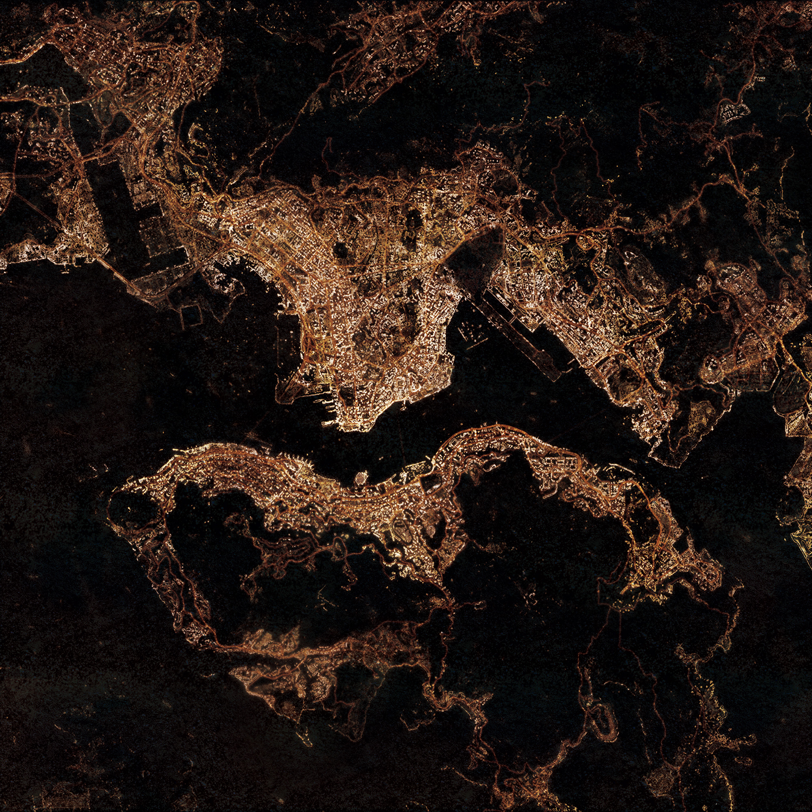

Welcome
My name is Ling Yi Cheung, Sophia. I was born and raised in Hong Kong, I have recently finished my Bachelor’s degree at the Chinese University of Hong Kong in 2022, majoring in Geography and Resource Management. I would love to share a picture of one of my favourite places in Hong Kong, which is the Victoria Harbour, it separates the Hong Kong Island in the south from the Kowloon Peninsula to the north.
With interest in geospatial science, I have decided to pursue a Master’s degree related to it, hence, I am now studying the MSc Social and Geographic Data Science at UCL. I am very new to programming, and it is always a challenge for me to troubleshoot errors and problems in Rstudio and python when performing different types of spatial analysis, and data manipulation. I hope to improve and enhance my skills on geospatial science in this degree. Besides, I want to learn more about remote sensing, because I have not been taking many courses related to remote sensing in the past. So, I hope I can learn about the principles and important concepts in remote sensing, and utilize the knowledge in the future. For each week, there will be summary and application example, followed by a reflection, please enjoy.
